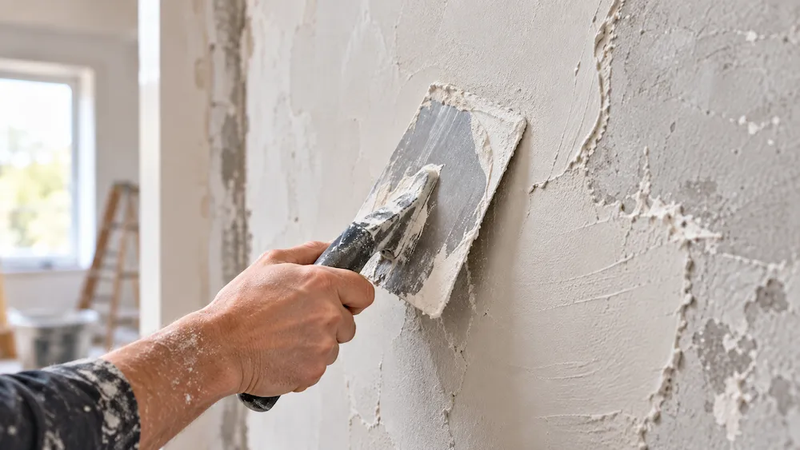

Flächen prüfen
Wir besprechen Ihre Wünsche und sehen uns den Untergrund an: Ist er tragfähig, eben und für die geplante Oberfläche geeignet? Auch vorhandene Schäden werden berücksichtigt.
UNSERE LEISTUNGEN
Die Grundlage für schöne, gleichmäßige Wände.
Ob unebene Altbauwand, neuer Innenraum oder Fläche vor dem Anstrich: Erst der richtige Untergrund macht eine hochwertige Oberflächengestaltung möglich. Wir schauen uns die vorhandenen Flächen an und besprechen mit Ihnen, welche Putz- und Spachtelarbeiten für Ihr Projekt sinnvoll sind.

SCHRITT FÜR SCHRITT
Verputzen und Spachteln ist nicht auf jeder Baustelle gleich. Der Zustand der Flächen und das gewünschte Ergebnis bestimmen, welche Schritte nötig sind.
Wir besprechen Ihre Wünsche und sehen uns den Untergrund an: Ist er tragfähig, eben und für die geplante Oberfläche geeignet? Auch vorhandene Schäden werden berücksichtigt.
Je nach Zustand können lose Stellen entfernt, Unebenheiten ausgeglichen oder passende Grundierungen eingesetzt werden. Die Vorbereitung wird auf den Untergrund abgestimmt.
Der passende Putz schafft eine geeignete Basis. Anschließend können Spachtelgänge folgen, um Übergänge, Fugen oder ganze Flächen für das gewünschte Finish vorzubereiten.
Nach den erforderlichen Trocknungs- und Bearbeitungsschritten betrachten wir das Ergebnis. So lässt sich klären, ob die Flächen für den nächsten Arbeitsschritt bereit sind.
WISSENSWERTES
Beide Arbeiten gehören zusammen – erfüllen aber unterschiedliche Aufgaben. Die richtige Kombination hängt vom Zustand der Wand und vom gewünschten Finish ab.
Putz bildet häufig die Grundlage für die weitere Wandgestaltung. Er kann den Untergrund ausgleichen, Flächen vereinheitlichen und je nach Material und Aufbau bestimmte Eigenschaften der Wand unterstützen. Ob ein neuer Putzauftrag nötig ist oder vorhandene Flächen ausgebessert werden können, lässt sich erst nach einer Prüfung sinnvoll entscheiden.
Mit Spachtelmasse lassen sich kleine Vertiefungen, Übergänge und Unebenheiten bearbeiten. Je nach Ziel werden einzelne Stellen ausgebessert oder größere Flächen in mehreren Arbeitsgängen geglättet. Auch das Schleifen kann dazugehören. So entsteht eine Oberfläche, die zum geplanten Anstrich oder zu einer anderen Wandgestaltung passt.
Nicht jede Oberfläche muss gleich aussehen. Eine Wand für eine strukturierte Gestaltung stellt andere Anforderungen als eine besonders glatte Fläche, auf der Streiflicht Unebenheiten stärker sichtbar macht. Deshalb besprechen wir vor Beginn, welches Erscheinungsbild Sie sich wünschen und welche Vorarbeiten dafür erforderlich sind.
Nach dem Verputzen oder Spachteln sind die richtigen Trocknungszeiten wichtig. Erst wenn der jeweilige Untergrund dafür geeignet ist, können weitere Arbeiten wie Grundieren, Streichen oder Tapezieren folgen. Eine abgestimmte Reihenfolge hilft, unnötige Nacharbeiten zu vermeiden.
GUT ZU WISSEN
Eine kleine Ausbesserung ist etwas anderes als die vollständige Bearbeitung mehrerer Räume. Entscheidend sind zum Beispiel die Fläche, der Zustand des Untergrunds, nötige Vorarbeiten und das gewünschte Oberflächenbild. Fotos helfen bei einer ersten Orientierung; für eine verlässliche Einschätzung kann eine Besichtigung sinnvoll sein.
Solche Auffälligkeiten sollten vor dem Überarbeiten geprüft werden. Nicht jeder Riss und nicht jede feuchte Stelle lässt sich allein mit Putz oder Spachtelmasse dauerhaft beheben. Die Ursache muss zuerst geklärt werden.
JETZT KOSTENLOSES ANGEBOT ANFORDERN
Ob einzelne Stellen oder ganze Räume: Beschreiben Sie kurz, welche Wände oder Decken bearbeitet werden sollen. Wir melden uns persönlich bei Ihnen zurück.